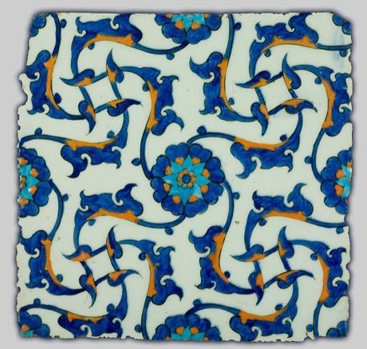
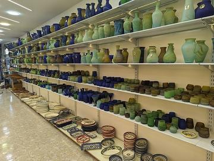
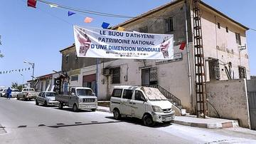
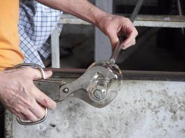
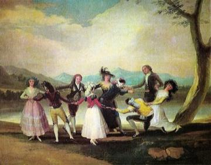
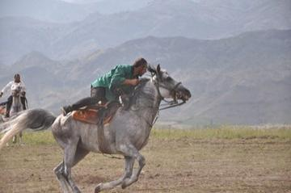
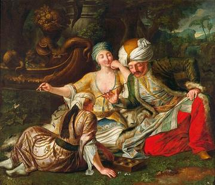
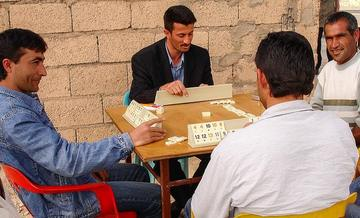

Home / Living Traditions / Mesopotamia, Levant and Arabia
Playable heritage gameIznik tile painting
Also known as İznik çinisi
Iznik tiles are painted by hand on a white body in cobalt blue, clear turquoise and a raised tomato red. Here you draw a tulip, a carnation and a long saw-edged leaf across a panel of nine tiles, then flood them with glaze.

How to play
- Look at the small panel at the top: it shows the finished tiles.
- Pick cobalt and drag along the lit lines to draw the outlines; press Next when the drawing is done.
- Pick a glaze and tap a shape to flood it: tomato red for the tulip and carnation, turquoise for the leaf.
- Add the fine cobalt veins, then press Check to see your stars. Mirror repeats each stroke on the other half of the panel.
Rules at a glance
- The panel has three steps in order: outlines, glaze fills, veins.
- The brush carries a limited load of paint; dip it again when the line runs dry.
- A line scores by how closely it follows the guide; a fill scores by how much of the shape holds the right glaze.
- Glaze that spills outside an outline counts against you; undo takes back the last stroke.
- With Mirror on, each stroke is repeated on the other half of the panel.
- Three stars for a close, clean, well-coloured panel.
About the tradition
Iznik, the old town of Nicaea in north-west Turkey, was the centre of a famous tile and pottery industry from the late fifteenth to the seventeenth century. Its quartz-rich white body, cobalt, turquoise and raised red glazes decorated palaces and public buildings across the Ottoman world, and potters in Iznik and Kutahya keep the craft alive today.
Origins
A living tradition passed from person to person; it is not tied to a single dated origin. It belongs to the cultural world of Mesopotamia, Levant and Arabia.
Credits
- Photo: Iznik tile, 1560, public domain, Wikimedia Commons
- Photo: Unknown, Turkey, 1560 (Turkey), Public domain, source on Wikimedia Commons
- Text: CC BY-SA 4.0, World Heritage Games.
Sources

Get the app
Iznik tile painting is one of 7 tile and pottery crafts in the Tiles & Pottery of the World app for Android. Submitted to Google Play; in review. Store links appear here the day it goes live. One app, many traditions, no account needed.
More games to play


Hebron Glassblowing
Palestine · Crafts and makingPlay preview · in the Jewels & Glass of the World app


More from Turkey




Oil wrestling
Turkey · Wrestling and martial sports